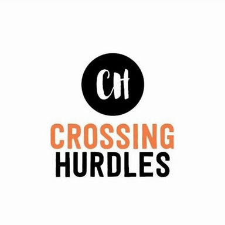

Job search platform
Elinext built a job search product tied to recruitment and assessment systems for education markets.
Read the case study
Prepared for Crossing Hurdles by ElinextCrossing Hurdles is moving from fast talent matching to larger company accounts. The next step is product depth: clearer workflows, stronger backend paths, and proof that every placement step is controlled.
Saw you are hiring Enterprise Sales and backend PHP roles. That usually means sales is opening larger doors while engineering must make the platform ready for harder buyer checks.
We would place a dedicated squad under your product owner for an eight-week enterprise-readiness sprint.
Use the stack that fits your hiring signal and likely client portal needs.
Map the AI jobs and client hiring flows, then mark where enterprise buyers need security, audit, and status proof.
Build backend services for role intake, candidate state changes, and partner handoffs, with clean PHP and Node.js APIs.
Add QA automation around referral, screening, and onboarding paths, so sales demos do not depend on manual checks.
Ship a simple enterprise reporting layer for clients, showing pipeline status, task health, and clear next steps.
Run weekly demos with Vivek and the founder team, then hand over code, tests, and roadmap notes.
Elinext is a full-cycle software development company, active since 1997, with about 700 in-house specialists and no freelancers. We build web, backend, QA, AI/ML, and data systems for clients that need stable delivery. Our work is backed by ISO 9001 and ISO 27001. Teams have served Siemens, Broadcom, Volkswagen, and TUI. That mix fits a focused squad for Crossing Hurdles, where sales speed now needs strong product and QA support.
Elinext built a job search product tied to recruitment and assessment systems for education markets.
Read the case studyElinext built backend logic to collect, process, and analyze questionnaire answers for skill checks.
Read the case study